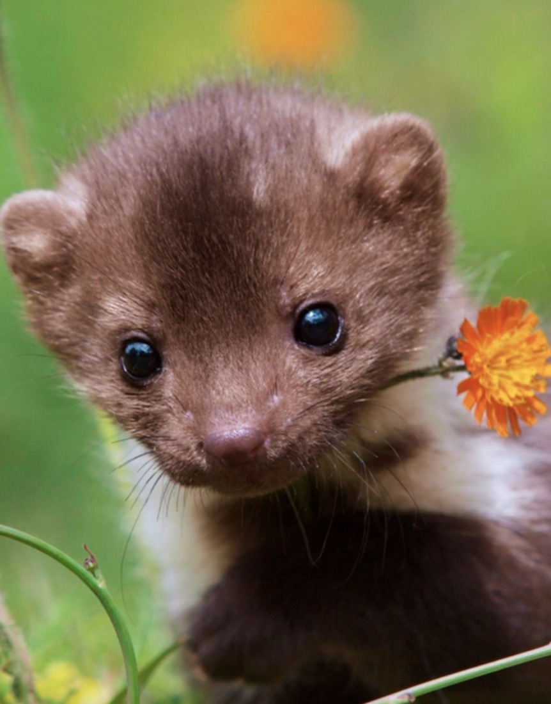
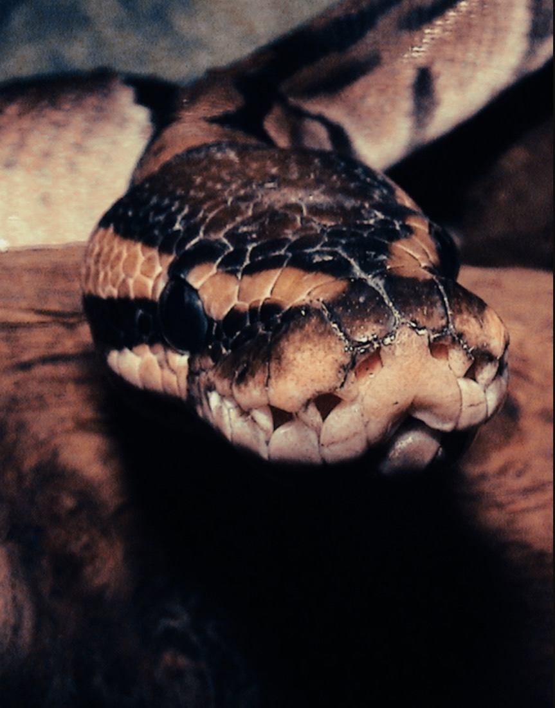
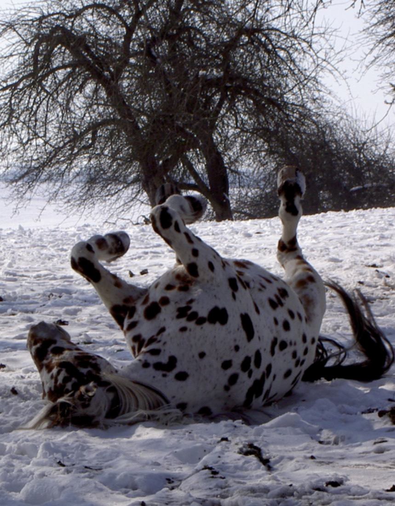
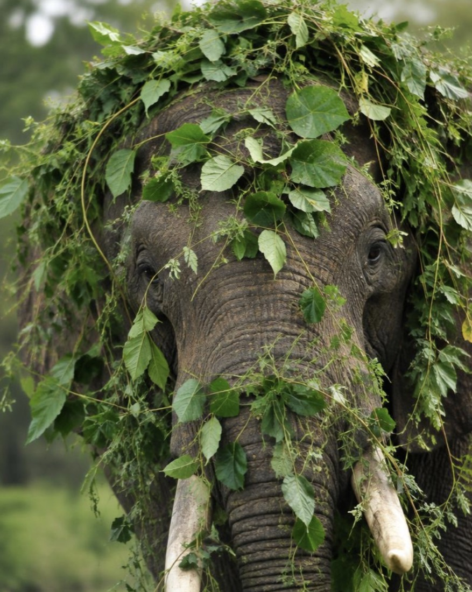
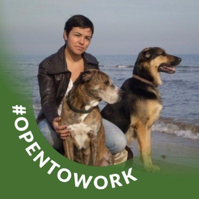

Nuria Maldonado
Wildlife Conservation & Animal Welfare Specialist
Scientific expertise. Practical insight. Lasting impact.
Independent consultancy in wildlife conservation, animal welfare and biodiversity, combining international research experience with practical expertise in forest elephant and chimpanzee conservation.
“What you do makes a difference, and you have to decide what kind of difference you want to make.”Dr. Jane Goodall
Independent expertise. Scientific rigour.
A lasting commitment to wildlife.
I bring together scientific knowledge, hands-on animal care experience and international conservation expertise to help protect wildlife, advance animal welfare and support evidence-based conservation initiatives.
As an environmental scientist and independent consultant, I specialise in wildlife conservation, biodiversity research and animal welfare, with particular expertise in elephants and chimpanzees. My work bridges scientific research and practical application, combining field experience, conservation data analysis, expert assessment and animal husbandry consultancy to address complex challenges in wildlife protection.
Over the course of my career, I have collaborated with international conservation organisations, research institutions, zoological collections and citizen-science initiatives. My experience spans wildlife identification and population assessment, camera-trap research, conservation data management, environmental impact appraisal, expert reporting, and the development of animal care and welfare standards.
Through iScapes – International Species Conservation and Animal Protection Expert Services, I provide independent, multidisciplinary expertise tailored to the needs of conservation projects, animal welfare organisations, zoos, sanctuaries and research teams.
My approach is grounded in scientific integrity, practical understanding and a commitment to meaningful outcomes. I believe effective conservation requires more than knowledge alone: it demands careful observation, critical thinking, collaboration and a deep understanding of the animals and ecosystems we seek to protect.
My mission is to turn specialist knowledge into informed action, contributing to better animal welfare, stronger conservation initiatives and the long-term protection of biodiversity.



Areas of expertise

Wildlife Conservation & Biodiversity Research
Supporting research and conservation initiatives through wildlife identification, population assessment and data analysis.
Elephant & Primate Expertise
Applying specialist knowledge of elephant and chimpanzee biology, behaviour, ecology and conservation.
Animal Welfare & Husbandry Consultancy
Advising on animal care, training, enrichment, feeding and husbandry improvements.
Environmental Assessment & Expert Reporting
Contributing to environmental impact appraisal and preparing specialist reports, including work related to CITES.
Conservation Data & Scientific Projects
Supporting data quality, research coordination, camera-trap analysis and citizen-science platforms.

Let’s work together
Whether you are developing a wildlife conservation project, improving animal welfare standards, conducting scientific research or seeking independent specialist advice, I welcome opportunities to collaborate with organisations and professionals committed to protecting wildlife.
nuriamaldonadot@gmail.com · +34 681 146 385
Let’s turn knowledge into meaningful conservation action.